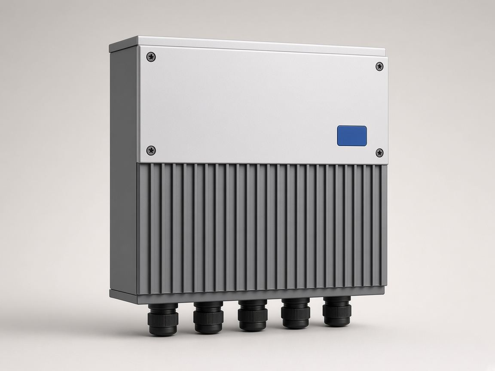

Солнечная энергетика · инверторы
Солнечные, сетевые и гибридные инверторы из Китая
Yucore Industrial Supply подбирает сетевые, гибридные и автономные солнечные инверторы из Китая для поставки в Россию. Запрос принимаем по модели, фото шильдика или электрическим параметрам. Цена, срок и доступность подтверждаются в ответе на заявку. Наличие не гарантируется до проверки.
Это не частотный преобразователь. VFD меняет частоту питания электродвигателя. Солнечный инвертор преобразует постоянный ток массива и, в гибридной схеме, аккумулятора.

Не смешивать в одной строке
Три типа солнечных инверторов
Официальная авторизация брендов не заявляется без письменного подтверждения по конкретному заказу. Бренд в письме нужен только чтобы найти указанную модель.
Сетевые
- Работают параллельно с сетью, аккумулятор не обязателен
- Мощность, число фаз и число MPPT
- Диапазон напряжения фотоэлектрического массива
- Степень защиты и место установки, если они заданы
Гибридные
- Связывают массив, сеть и батарею
- Напряжение батареи, ток заряда и нужна ли работа без сети
- Модель инвертора, если накопитель уже выбран
- Батарею лучше вынести отдельной строкой
Автономные
- Питание нагрузки от массива и батареи
- Сеть отсутствует или используется как резерв
- Напряжение батареи и характер нагрузки
- Не заменяют привод насоса или станка
Если модели нет под рукой
- Фото шильдика крупным планом
- Скрин или файл спецификации
- Мощность станции, если известна только она
- Город доставки и количество
Как это ищут
Формулировки для запроса
FAQ
Вопросы по солнечным инверторам
Чем солнечный инвертор отличается от частотного преобразователя?
Солнечный инвертор относится к фотоэлектрической станции: он преобразует постоянный ток массива и, в гибридной схеме, аккумулятора. Частотный преобразователь меняет частоту питания электродвигателя. Это разные запросы. Привод двигателя запрашивайте на странице частотных преобразователей.
Какие данные нужны для запроса солнечного инвертора?
Укажите тип: сетевой, гибридный или автономный. Добавьте мощность по переменному току, напряжение и число фаз сети, диапазон MPPT, данные батареи для гибрида, количество, город доставки и фото шильдика или спецификацию. Если известна только мощность станции, так и напишите.
Можно ли запросить замену снятого с производства солнечного инвертора?
Да. Начните с фото шильдика и схемы подключения. Замена проверяется по напряжению, мощности, числу фаз и интерфейсу и согласуется до заказа.
Нужно ли отдельно указывать трансформатор и аккумуляторы?
Да, если они входят в поставку. Силовой трансформатор, накопитель, контроллер заряда и комбайнер описываются своими параметрами и отдельными строками запроса. Как собрать такой список, описано в руководстве по заявке.
Есть модель или схема станции?
Пришлите ее Summer. Модули, кабель и разъемы можно добавить отдельными строками: мощность модуля, напряжение, количество и город.
Рядом по теме